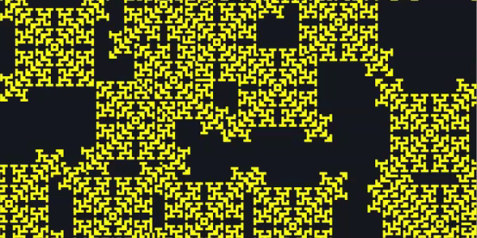

Discrete Automata
Game of Life

Description
Conway's Game of Life (GoL) is a zero-player game, where the evolution of the game board depends only on the state of the board. It is the best known example of a cellular automaton. To interact with the game, you can create an initial configuration and see how it evolves, pausing or stepping through the states of the board. Interestingly, the GoL is turing-complete and can simulate a universal constructor or any other turing machine.
Rules
The GoL has cells in 2 states, alive and dead. The evolution of a cell depends on its 8 neighbors. For the GoL, the below are the rules:
- A dead cell comes alive if it has exactly 3 neighbors
- A live cell survives only if it has 2 or 3 neighbors
The above rules can be represented by the rulestring B3/S23. Life-like automata are a class of automata which can be represented by such rulestring. For example, the automata "HighLife" is represented by B36/S23, where birth occurs when a cell has 3 or 6 neighbors, and survival occurs when a live cell has 2 or 3 neighbors.
Additional Info
This simulator has been modified to allow for modification of the neighborhoods for life-like automata. For automata with neighborhoods of size greater than 10, numbers in rulestrings can be wrapped in brackets [Example: B1(10)/S2(10)].
Click here for more info on rulestrings and life-like automata.
Brian's Brain

Description
Brian's Brain is an extension of the "Seeds" lifelike automata (B2/S) to 3 states. Because of the automaton's name, it can be linkened to a brain and each cell likened to a neuron. The 3 states of the cells are named approppriately (ready, firing, refactory). Brian's Brain displays the interesting property where small patterns tend to blow up and almost all patterns are spaceships: patterns which mvoe across the grid.
Rules
Brian's Brain has cells in 3 states, ready (neurons prepared to fire), firing (active neurons) and refactory (neurons resting after firing). The evolution of a cell, similar to life-like automata, depends on its 8 neighbors. Below are the rules:
- A ready cell fires if it has exactly 2 firing neighbors
- A firing cell always becomes refactory
- A refactory cell always becomes ready
This editor has been customized such that you can change the conditions on which a cell fires. The rulestring "2/3/4" means a cell will fire if it has 2, 3 or 4 neighbors.
Wireworld
Description
Wireworld is a 4-state cellular automata operating in a 2-d neighborhood with a Moore neighborhood (8 direct neighbors). Wireworld is especially suited for simulating digital electronic circuits as ot has been defined similarly to how a circuit behaves. Unlike conventional life-like cellular automata, the evolution of Wireworld is constrained to only onccur within wires/conductors. Given an infinite 2D plane, Wireworld is turing-complete due to its ability to make logic gates.
Rules
Wireworld has 4 states: empty, electron head, electron tail, and conductor, similar to components of a circuit. Below are its rules:
- Empty cells always stay as empty cells
- Electron heads always become electron tails
- Electron tails always become conductors
- Conductors become electron tails if they have exactly 1 or 2 electron head neighbors
Additional Info
Wireworld can make complex mechanisms such as logic gates, 8-bit multipliers and adders, clocks and even displays. For a list of interesting components, click here.
Rock, Paper, Scissors